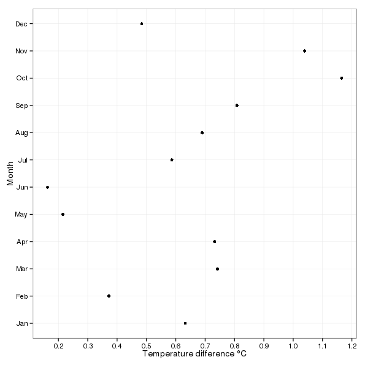
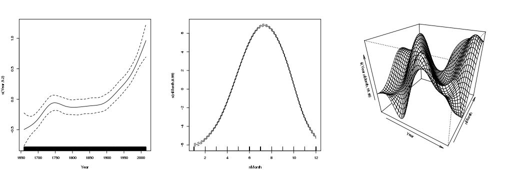

Are some seasons warming more than others?
Posted in
Tagged
GAM Time series Central England Temperature Splines Interactions
I ended the last post with some pretty plots of air temperature change within and between years in the Central England Temperature series. The elephant in the room2 at the end of that post was is the change in the within year (seasonal) effect over time statistically significant? This is the question I’ll try to answer, or at least show how to answer, now.
The model I fitted in the last post was
\[ y = \beta_0 + f(x_1, x_2) + \varepsilon, \quad \varepsilon \sim N(0, \sigma^2\mathbf{\Lambda}) \]
and allowed, as we saw, for the within year spline/effect to vary smoothly with the trend or between year effect. Answering our scientific question require that we determine whether the spline interaction model (above) fits the data significantly better than the additive model
\[ y = \beta_0 + f_{\mathrm{seasonal}}(x_1) + f_{\mathrm{trend}}(x_2) + \varepsilon, \quad \varepsilon \sim N(0, \sigma^2\mathbf{\Lambda}) \]
which has a fixed seasonal effect?
The model we ended up with was the spline interaction with an AR(7) in the residuals. To catch you up, the chunk below loads the CET data and fits the model we were left with at the end of the previous post
library("mgcv")Loading required package: nlme
This is mgcv 1.8-9. For overview type 'help("mgcv-package")'.
library("ggplot2")Loading required package: methods
source(con <- url("http://bit.ly/loadCET", method = "libcurl"))
close(con)
cet <- loadCET()
## need a list with gamm default for verbose output
ctrl <- list(niterEM = 0, optimMethod="L-BFGS-B", maxIter = 100, msMaxIter = 100)
## knots - see previous post
knots <- list(nMonth = c(0.5, seq(1, 12, length = 10), 12.5))
m <- gamm(Temperature ~ te(Year, nMonth, bs = c("cr","cc"), k = c(10,12)),
data = cet, method = "REML", control = ctrl, knots = knots,
correlation = corARMA(form = ~ 1 | Year, p = 7))To answer our question, we want to fit the following two pseudo-code models and compare them using a likelihood ratio test
m1 <- gam(y ~ s(x1, x2), data = foo)
m0 <- gam(y ~ s(x1) + s(x2), data = foo)
anova(m1, m0)As is often the case in the real world, things aren’t quite so simple; there are several issues we need to take care of if we are going to really be testing nested models and the smooth terms that we’re interested in, specifically we need to
- ensure that the models really are nested models,
- fit using maximum likelihood (
method = "ML") not residual maximum likelihood (method = "REML") because the two models have different fixed effects - fit the same AR(7) process in the residuals in both models.
To compare additive models we really want to ensure that the fixed effects parts are properly nested and appropriate for an ANOVA-like decomposition of main effects and interactions. mgcv provides a very simple way to achieve this via a tensor product interaction smooth and the ti() function. ti() smooths are created in the same way as the te() smooth we encountered in the last post, but unlike te(), ti() smooths do not incorporate the main effects of the terms involved in the smooth. It is further assumed therefore that you have included the main effects smooths in the model formula.
Hence we can now fit models like
y ~ s(x1) + s(x2)
y ~ s(x1) + s(x2) + ti(x1, x2)and be certain that the s(x1) and s(x2) terms in each model are equivalent. Note that you can use s() or ti() for these main effects components; if you have a single variable involved in a ti() term you get the main effect. I’m going to use s() in the code below, because I had better experience fitting the gamm() models we’re using with s() rather than ti() main effects.
Fitting with maximum likelihood instead of residual maximum likelihood is just a simple matter of using method = "ML" in the gamm() call.
The last thing we need to fix before we proceed is making sure that the main effects model and the main effects plus interaction model both incorporate the same AR(7) process that we fitted originally and which we refitted here earlier as m. To achieve this, we need to supply the AR coefficients to corARMA() when fitting our decomposed models, and indicate that gamm() (well, the underlying lme() code) shouldn’t try to estimate any of the parameters for the AR(7) process.
We can access the AR coefficients of m through the intervals() extractor functions and a little bit of digging. In the chunk below I store the AR(7) coefficients in the object phi. Now when fitting the gamm() models we have to pass value = phi, fixed = TRUE to the corARMA() bits of the model call to have it use the supplied coefficients instead of estimating a new set.
We are now ready to fit our two models to test whether the interaction smooth is required
phi <- unname(intervals(m$lme, which = "var-cov")$corStruct[, 2])
m1 <- gamm(Temperature ~ s(Year, bs = "cr", k = 10) + s(nMonth, bs = "cc", k = 12) +
ti(Year, nMonth, bs = c("cr","cc"), k = c(10, 12)),
data = cet, method = "ML", control = ctrl, knots = knots,
correlation = corARMA(value = phi, fixed = TRUE, form = ~ 1 | Year, p = 7))
m0 <- gamm(Temperature ~ s(Year, bs = "cr", k = 10) + s(nMonth, bs = "cc", k = 12),
data = cet, method = "ML", control = ctrl, knots = knots,
correlation = corARMA(value = phi, fixed = TRUE, form = ~ 1 | Year, p = 7))The anova() method is used to compared the fitted models
anova(m0$lme, m1$lme) Model df AIC BIC logLik Test L.Ratio p-value
m0$lme 1 5 14750.9 14782.70 -7370.449
m1$lme 2 7 14706.0 14750.52 -7346.001 1 vs 2 48.89479 <.0001
There is clear support for m1 the model that allows for the seasonal smooth to vary as a smooth function of the trend over the model with additive effects.
What does our model say about the change in monthly temperature over the past century? Below I simply predict the temperature for each month in 1914 and 2014 and then compute the difference between years.
pdat <- with(cet,
data.frame(Year = rep(c(1914, 2014), each = 12),
nMonth = rep(1:12, times = 2)))
pred <- predict(m$gam, newdata = pdat)
pdat <- transform(pdat, fitted = pred, fYear = as.factor(Year))
dif <- with(pdat, data.frame(Month = 1:12,
Difference = fitted[Year == 2014] - fitted[Year == 1914]))A plot of the temperature differences3 is shown below, being produced by the following code
ggplot(dif, aes(x = Difference, y = Month)) +
geom_point() +
labs(x = expression(Temperature ~ difference ~ degree*C),
y = "Month") +
theme_bw() + # minimal theme
scale_y_continuous(breaks = 1:12, # tweak where the x-axis ticks are
labels = month.abb, # & with what labels
minor_breaks = NULL) +
scale_x_continuous(breaks = seq(0, 1.2, by = 0.1),
minor_breaks = NULL)
Most months have seen at least ~0.5°C increase in mean temperature between 1914 and 2014, with October and November both experiencing over a degree of warming over the period.
Before I finish, it is instructive to look at what the ti() term in the decomposed model looks like and represents
layout(matrix(1:3, ncol = 3))
op <- par(mar = rep(4, 4) + 0.1)
plot(m1$gam, pers = TRUE, scale = 0)
par(op)
layout(1)
The first two terms are the overall trend and seasonal cycle respectively. The third term, shown as a perspective plot, is the tensor production interaction term. This term reflects the amount by which the fitted temperature is adjusted from the overall trend and seasonal cycle for any combination of month and year.
Footnotes
well, one of the elephants; I also wasn’t happy with the AR(7) for the residuals↩︎
well, one of the elephants; I also wasn’t happy with the AR(7) for the residuals↩︎
If I was being more thorough, I could use the prediction matrix feature of
gam()models to put approximate confidence intervals on these differences.↩︎